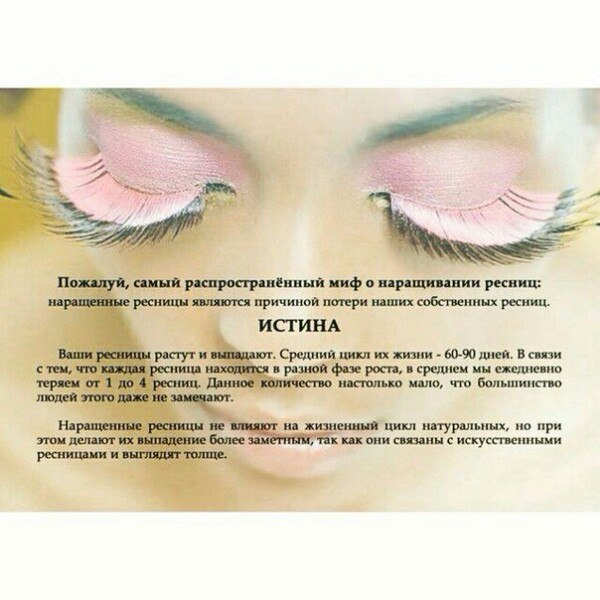
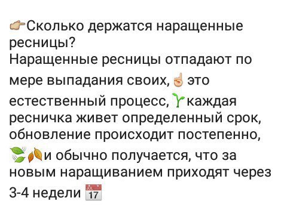
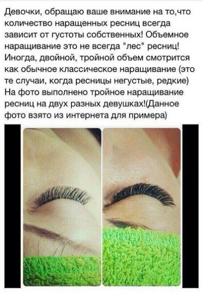
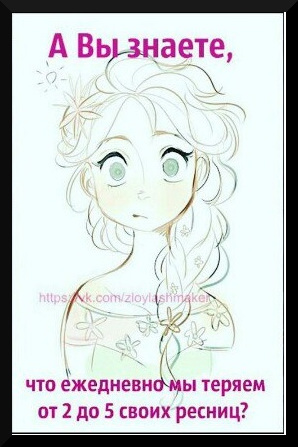
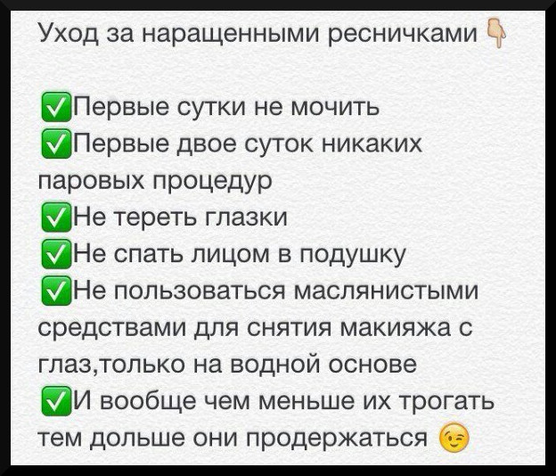

Наращивание ресниц
Рада приветствовать Вас на своем сайте. Позвольте представиться,меня зовут Екатерина, занимаюсь наращиванием ресничек, не только классика, 2D но и 3D. Добро пожаловать! :)
Вся правда о наращивании ресниц-
наращивание ресниц способно спасти нашу бьюти-жизнь. Но у идеальных ресниц 24/7 есть и свои минусы, которые важно знать, прежде чем с разбегу прыгать в бассейн или идти париться в сауне. Плюсы:
- Огромным (и, пожалуй, главный) плюс — экономия драгоценного времени. Вы больше не тратите много времени на макияж по утрам, можете спать подольше и лениться все утро.
- Ваши глаза и ваши ресницы будут всегда выразительными и красивыми. И вам не страшно пойти в бассейн или на пляж — никаких комочков, слипшихся ресниц и растекшейся туши.
- В любой непонятной ситуации вы всегда при макияже. Достаточно накрасить губы или сделать тон. Или вообще больше ничего не наносить — мы же любим минимализм.





Мы в социальных сетях